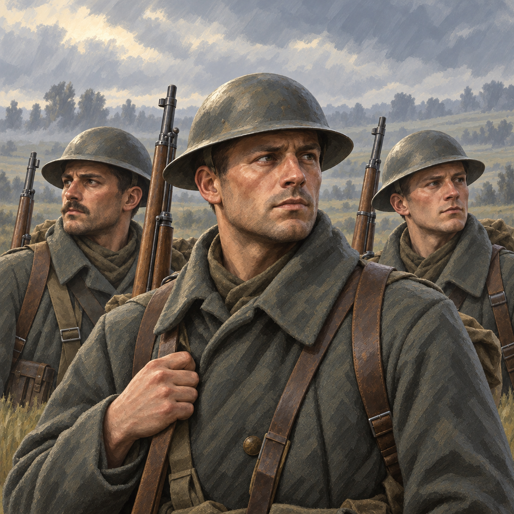

Three anonymous infantrymen, painted as a new owner-neutral illustration. CP/EC infantry share this image; flags, text and frame remain separate UI layers.
Offline candidate. Native resource binding, panel integration and runtime acceptance remain open.
Review and evidence · Crop and panel contract · Unit coverage · Manifest · Recipe and pins
Shown at420CSSpixels wide; sourcebytes are unchanged. Exactcentred105:94 crop and Lanczos chain are pinned in the recipe.
